Snakes of Papua New Guinea
128 living snake species are recorded in Papua New Guinea in SnakeList: 55 venomous and 73 non-venomous, from 8 families.
- 128living species
- 8families
Danger to people · tap a number to show only those snakes
Harmful = dangerously venomous + giant constrictors. Harmless = not venomous and not a giant constrictor. Mildly venomous snakes have no serious bites to people documented. Any snake can bite.
These totals count the unique living snake species SnakeList records in Papua New Guinea. A species counts if it is recorded anywhere in the country, so not every snake lives in every part of it.
In SnakeList’s checklist filters
How many of the 128 living species here each filter in the SnakeList app picks out – tap a number to show only those snakes.
Snake family5 types, 8 families
Type
Family
Habitats15 habitat groups
Habitats are estimated from where each snake is recorded and what kind of snake it is, as in the app; a snake can count in several.
Characteristics55 venomous, 16 constrictors
Constrictor and Non-constrictor count only snakes whose family or genus is documented as constricting or not; the rest are not documented.
Other filters3 popular, 77 rare
- 0extinct
Species
Showing 128 species
- No photo yetAdmiralty Islands GroundsnakeStegonotus admiraltiensis
- No photo yetAndian Stout-tailed SnakeCalamophis katesandersae
- No photo yetArafura Smooth SeasnakeParahydrophis mertoni
- No photo yetArfak Stout-tailed SnakeCalamophis sharonbrooksae
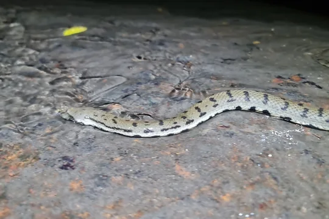
Australian BokadamCerberus australis- No photo yetBanded WatersnakeDjokoiskandarus annulata
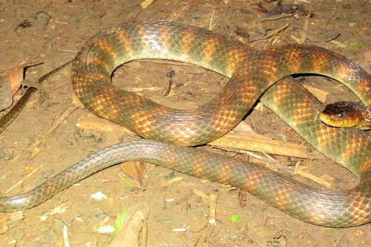
Barred KeelbackTropidonophis doriae- No photo yetBelcher's Sea SnakeHydrophis belcheri
 Bibron's Pacific BoaCandoia bibroni
Bibron's Pacific BoaCandoia bibroni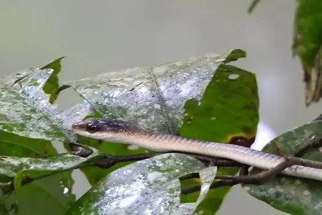
Big-eyed Tree SnakeDendrelaphis macrops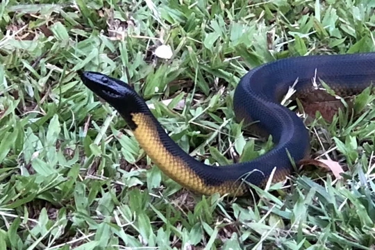
Bismarck Ringed PythonBothrochilus boa- No photo yetBismarck Sharp-nosed BlindsnakeAcutotyphlops subocularis
- No photo yetBismark Ground SnakeStegonotus heterurus
- No photo yetBismark KeelbackTropidonophis hypomelas
 Black BlindsnakeGerrhopilus ater
Black BlindsnakeGerrhopilus ater- No photo yetBlack Forest SnakeToxicocalamus atratus
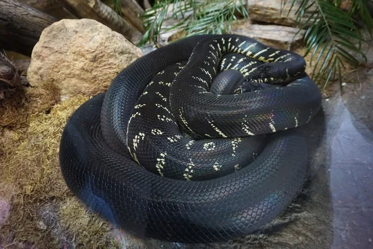
Black PythonSimalia boeleni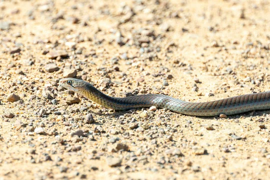
Black Whip SnakeDemansia vestigiata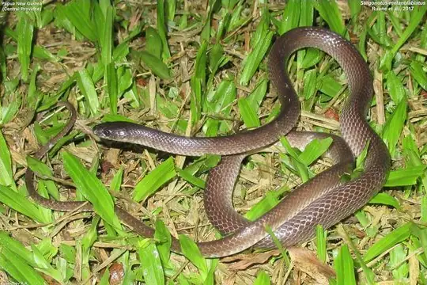
Black-lipped GroundsnakeStegonotus melanolabiatus Bougainville Blind SnakeAcutotyphlops solomonis
Bougainville Blind SnakeAcutotyphlops solomonis- No photo yetBougainville Coral SnakeParapistocalamus hedigeri
 Brown Tree SnakeBoiga irregularis
Brown Tree SnakeBoiga irregularis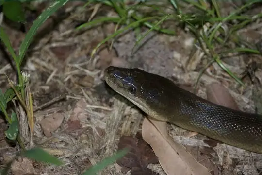
Brown Water PythonLiasis fuscus- No photo yetBuerger's Forest SnakeToxicocalamus buergersi
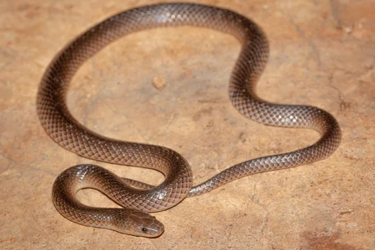
Carpentaria Whip SnakeCryptophis boschmai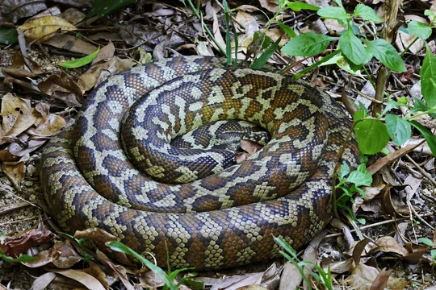
Carpet PythonMorelia spilota- No photo yetCloudy Mountains Forest SnakeToxicocalamus pachysomus
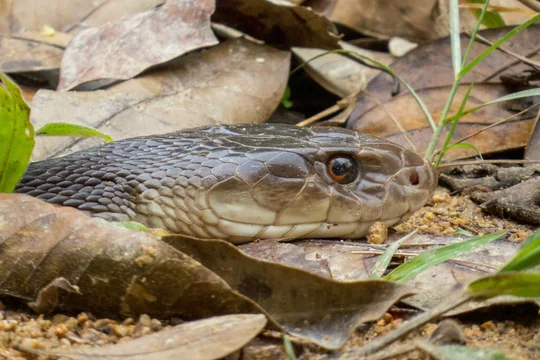
Coastal TaipanOxyuranus scutellatus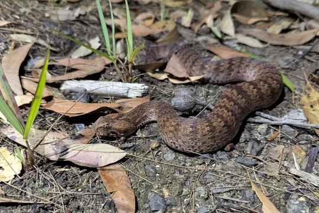
Common Death AdderAcanthophis antarcticus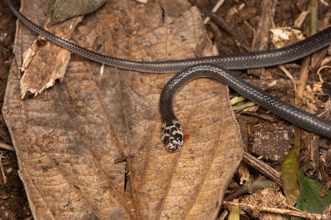
Diehl’s Little Ground SnakeStegonotus diehli- No photo yetEast Papuan KeelbackTropidonophis aenigmaticus
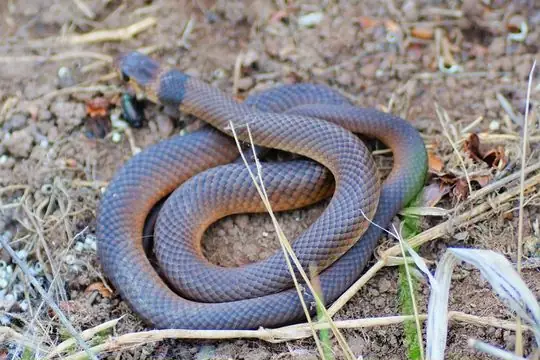
Eastern Brown SnakePseudonaja textilis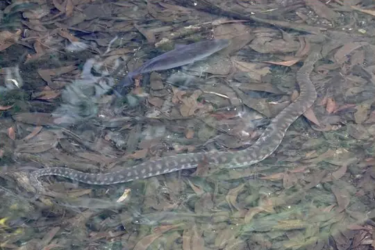
FilesnakeAcrochordus arafurae- No photo yetFine-spined SeasnakeHydrophis czeblukovi
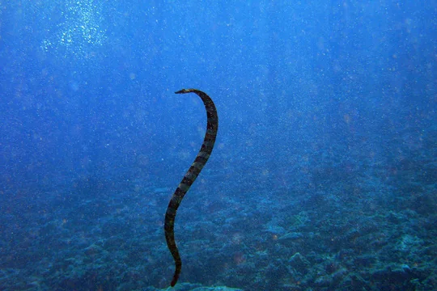
Flat-tail Sea Snake (schistorhyncha)Laticauda schistorhyncha- No photo yetFred Parker's BlindsnakeGerrhopilus fredparkeri
- No photo yetGoodenough Island Forest SnakeToxicocalamus goodenoughensis
 Greater SeasnakeHydrophis major
Greater SeasnakeHydrophis major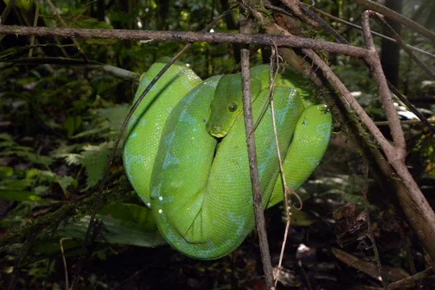
Green PythonMorelia azurea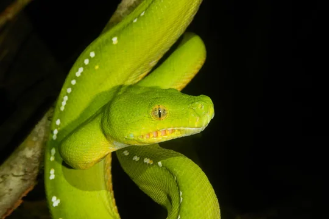
Green Tree PythonMorelia viridis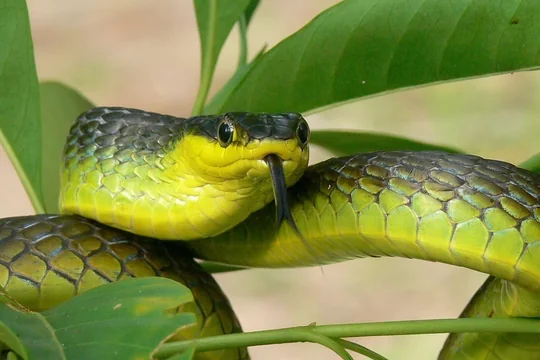
Green Tree SnakeDendrelaphis punctulatus Green TreesnakeDendrelaphis calligaster
Green TreesnakeDendrelaphis calligaster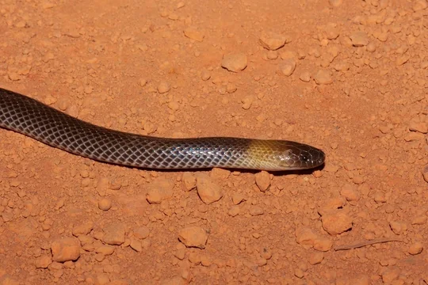
Grey-naped SnakeFurina tristis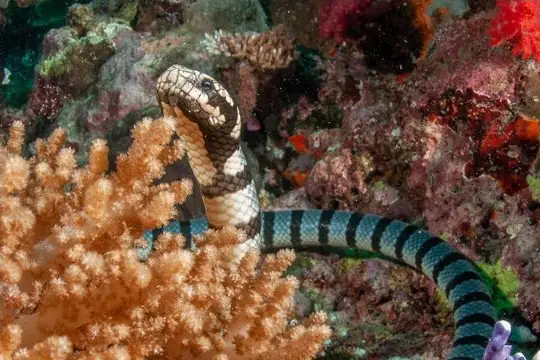
Guinea's Flat-tail Sea SnakeLaticauda guineai- No photo yetHighland KeelbackTropidonophis parkeri
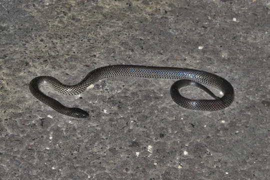
Ikaheka SnakeMicropechis ikaheka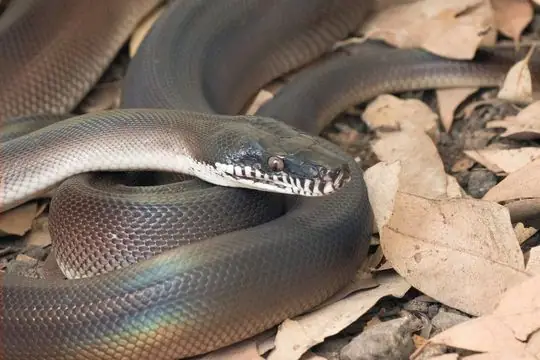
Karimui Basin White-lipped PythonLeiopython fredparkeri- No photo yetKebar Stout-tailed SnakeCalamophis ruuddelangi
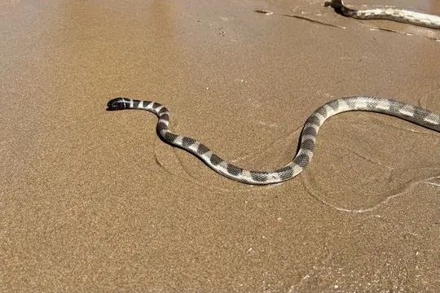
King's SeasnakeHydrophis kingii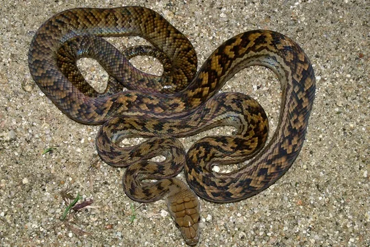
Kinghorn's Scrub PythonSimalia kinghorni Kunua Blind SnakeAcutotyphlops kunuaensis
Kunua Blind SnakeAcutotyphlops kunuaensis- No photo yetLorentz River TreesnakeDendrelaphis lorentzii
- No photo yetLoria Forest SnakeToxicocalamus loriae
- No photo yetLowland Beaked BlindsnakeGerrhopilus depressiceps
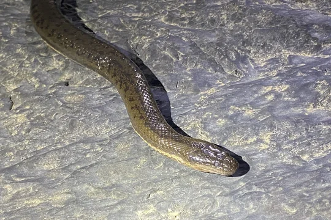
Macleay's Mud SnakePseudoferania polylepis- No photo yetManagalas Plateau SnakeToxicocalamus pumehanae
 Many-scaled KeelbackTropidonophis multiscutellatus
Many-scaled KeelbackTropidonophis multiscutellatus- No photo yetMcDowell’s BlindsnakeGerrhopilus mcdowelli
 Melanesia BlindsnakeRamphotyphlops depressus
Melanesia BlindsnakeRamphotyphlops depressus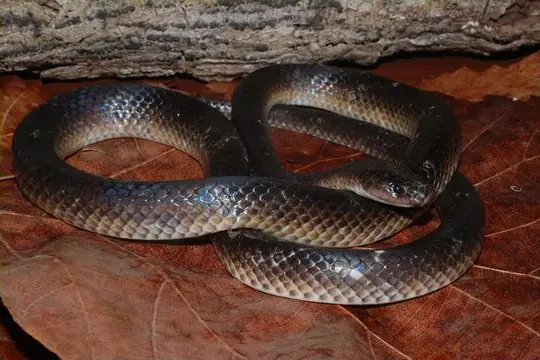
Milne Bay Ground SnakeStegonotus guentheri- No photo yetMisima Island Forest SnakeToxicocalamus misimae
- No photo yetMontane BlindsnakeGerrhopilus inornatus
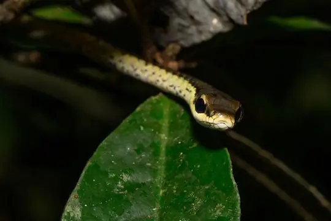
Montane TreesnakeDendrelaphis gastrostictus- No photo yetMount Lamington Forest SnakeToxicocalamus lamingtoni
- No photo yetMt Rossel Forest SnakeToxicocalamus holopelturus
- No photo yetMt Simpson Forest SnakeToxicocalamus mattisoni
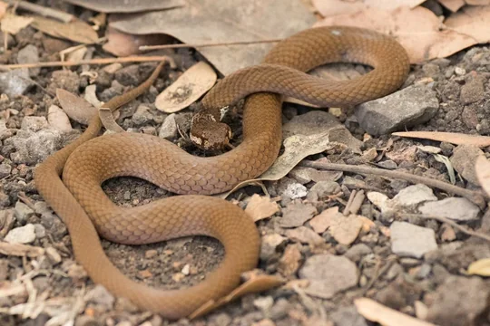
Müller's Crown SnakeAspidomorphus muelleri- No photo yetNew Britain KeelbackTropidonophis dahlii
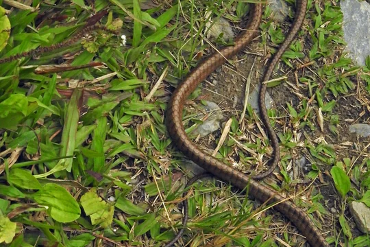
New Guinea BronzebackDendrelaphis lineolatus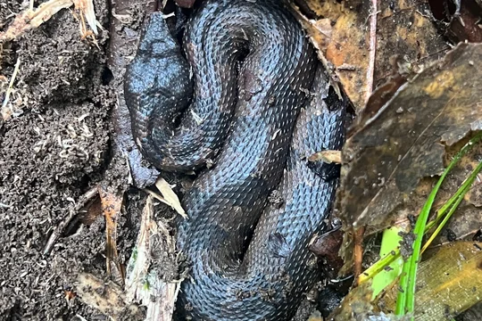
New Guinea Viper BoaCandoia aspera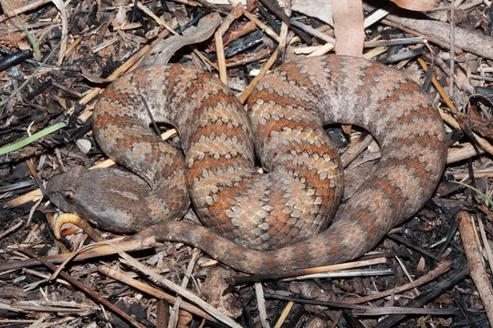
Northern Death AdderAcanthophis praelongus- No photo yetNorthern New Guinea BlindsnakeAnilios erycinus
- No photo yetNorthern New Guinea KeelbackTropidonophis mcdowelli
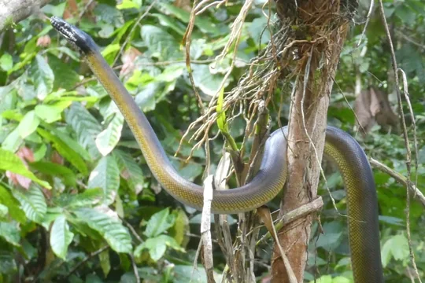
Northern White-Lipped PythonLeiopython albertisii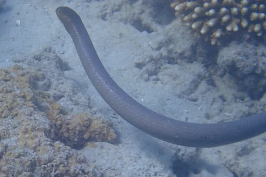
Olive Sea SnakeAipysurus laevis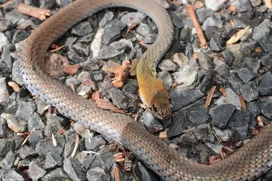
Olive WhipsnakeDemansia olivacea Ornate Sea SnakeHydrophis ornatus
Ornate Sea SnakeHydrophis ornatus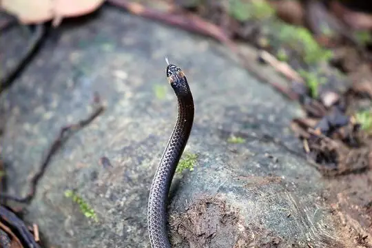
Owen Stanley Range Forest SnakeToxicocalamus stanleyanus Pacific Boa (carinata)Candoia carinata
Pacific Boa (carinata)Candoia carinata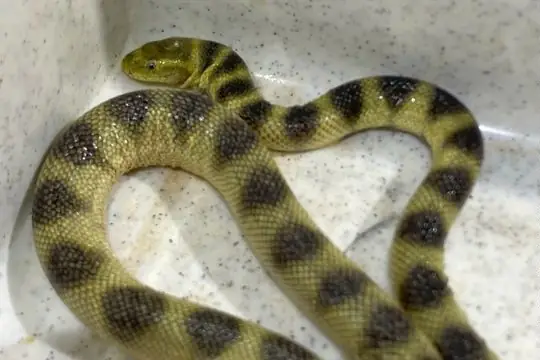
Pacific SeasnakeHydrophis pacificus- No photo yetPanaeate Island BlindsnakeGerrhopilus addisoni
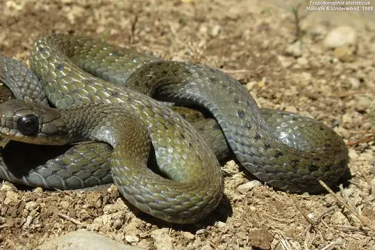
Papua New Guinea Montane KeelbackTropidonophis statisticus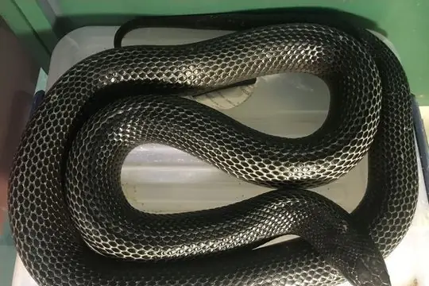
Papuan BlacksnakePseudechis papuanus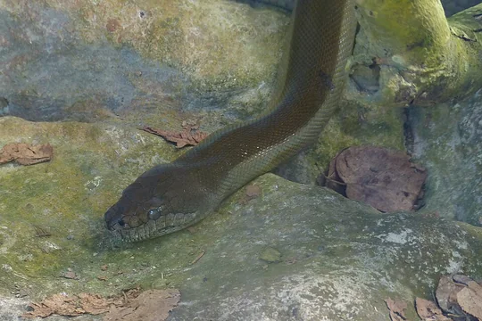
Papuan Olive PythonApodora papuana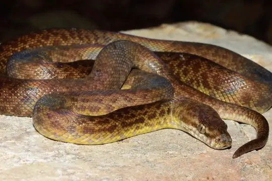
Papuan Spotted PythonAntaresia papuensis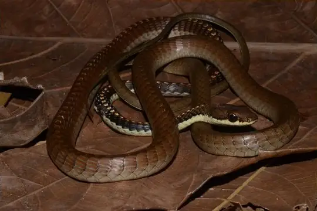
Papuan TreesnakeDendrelaphis papuensis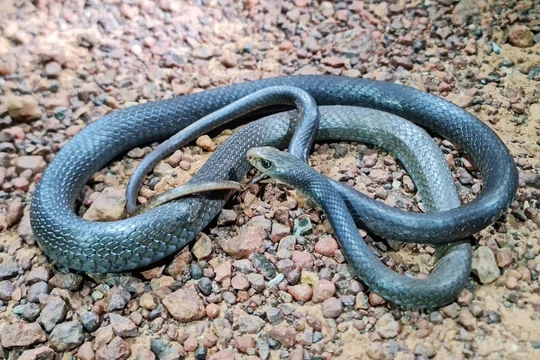
Papuan Whip SnakeDemansia papuensis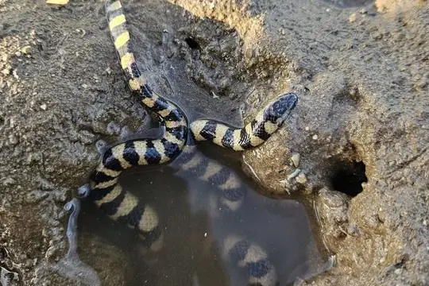
Port Darwin SeasnakeHydrelaps darwiniensis- No photo yetPreuss's Forest SnakeToxicocalamus preussi
- No photo yetPurari GroundsnakeStegonotus aplini
- No photo yetPöch's GroundsnakeStegonotus poechi
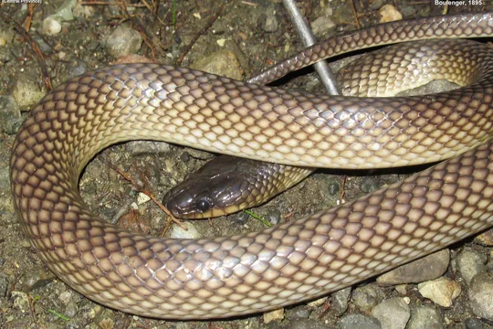
Reticulate GroundsnakeStegonotus reticulatus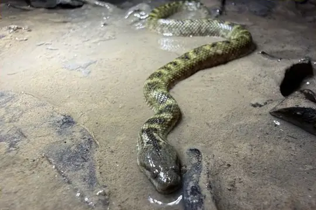
Richardson's Mangrove SnakeMyron richardsonii- No photo yetRobust SeasnakeHydrophis melanosoma
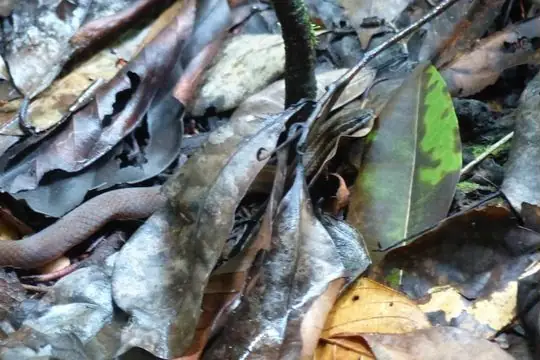
Schlegel's Crown SnakeAspidomorphus schlegelii- No photo yetSepik Beaked SeasnakeHydrophis zweifeli
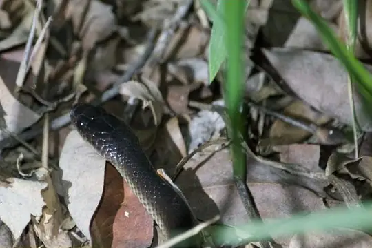
Slaty-grey SnakeStegonotus australis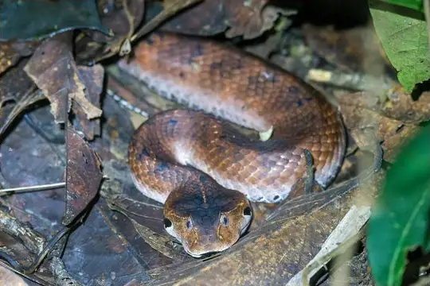
Smooth-scaled Death AdderAcanthophis laevis- Solomon Island Ground BoaCandoia paulsoni
- No photo yetSpotted Forest SnakeToxicocalamus spilolepidotus
- No photo yetStar Mountains Worm-Eating SnakeToxicocalamus ernstmayri
- Striped Crown SnakeAspidomorphus lineaticollis
- Striped Forest SnakeToxicocalamus vertebralis
- No photo yetSudest Island Forest SnakeToxicocalamus mintoni
- No photo yetTimor Reef SnakeAipysurus fuscus
- Torres Strait BlindsnakeAnilios torresianus
- White-tailed BlindsnakeAnilios leucoproctus
 Woodlark Island Forest SnakeToxicocalamus longissimus
Woodlark Island Forest SnakeToxicocalamus longissimus- Yellow Sea SnakeHydrophis spiralis
- Yellow-faced Whipsnake (psammophis)Demansia psammophis
- No photo yetAustraliasis amethystinus
- No photo yetGerrhopilus eurydice
- No photo yetGerrhopilus flavinotatus
- No photo yetGerrhopilus hades
- No photo yetGerrhopilus lestes
- No photo yetGerrhopilus lorealis
- No photo yetGerrhopilus papuanorum
- No photo yetGerrhopilus persephone
- No photo yetGerrhopilus polyadenus
- No photo yetGerrhopilus slapcinskyi
- No photo yetGerrhopilus suturalis
- No photo yetGerrhopilus wallachi
- No photo yetToxicocalamus buegersi
- No photo yetToxicocalamus cratermontanus
- No photo yetToxicocalamus longhagen
- No photo yetToxicocalamus nigrescens
- No photo yetToxicocalamus spilorhynchus
- No photo yetTropidonophis dolasii
No snakes in Papua New Guinea match.
Papua New Guinea’s snakes in numbers
- Families: Elapidae 54, Colubridae 26, Gerrhopilidae 17, Pythonidae 11, Homalopsidae 7, Typhlopidae 7, Boidae 5, Acrochordidae 1.
- 61 are recorded in no other country or territory in SnakeList: Admiralty Islands Groundsnake, Big-eyed Tree Snake, Bismarck Ringed Python, Bismarck Sharp-nosed Blindsnake, Bismark Ground Snake, Bismark Keelback, Black Forest Snake, Black Python, Black-lipped Groundsnake, Buerger's Forest Snake, Cloudy Mountains Forest Snake, Diehl’s Little Ground Snake and 49 more.
How precisely they are recorded
Of the 128 living species recorded in Papua New Guinea, 26 are recorded by province in SnakeList’s data; 102 are recorded only for Papua New Guinea as a whole, so the province pages list them as possible rather than recorded. SnakeList records each species by province, not by exact spot, so a species listed for a province may live in only part of it.
Provinces
The provinces where SnakeList records snakes, with how many living species are recorded in each. Each page has its species, venomous snakes, families, the species found only there, its cities and neighbours.
- Bougainville 3 species
- Central 16 species
- East Sepik 1 species
- Madang 7 species
- Manus 1 species
- Milne Bay 3 species
- Morobe 5 species
- New Ireland 3 species
- Port Moresby 2 species
- Sandaun 3 species
- West New Britain 3 species
- Western 3 species
No place matches that.
Cities
Its biggest cities, biggest first. SnakeList records snakes by province, not by city, so each city page shows the species recorded in its province and, separately, those only possible there - not species confirmed in the city.
- Port Moresby Port Moresby Province
No place matches that.